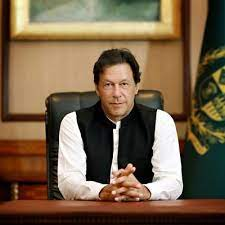
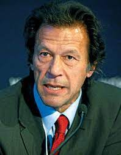
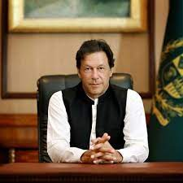
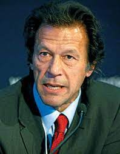

Tribute page About Imran Khan
Imran Khan has many great Qualities. only Few are listed below.
-
Captain of 1992 word cup winner Pakistan Cricket team
-
Founder of Shukat khanum cancer Hospital
-
Prime Minister of Islamic Republic of Pakistan
More Detail
Imran Ahmed Khan Niazi HI PP is the 22nd and current Prime Minister of Pakistan and the chairman of the Pakistan Tehreek-e-Insaf. Before entering politics, Khan was an international cricketer and captain of the Pakistan national cricket team, which he led to victory in the1992 Cricket World Cup.n India in 1987, Khan led Pakistan in its first-ever Test series win and this was followed by Pakistan's first series victory in England during the same year. Soon after returning to the captaincy, Khan led Pakistan to another winning tour in the West Indies, which he has recounted as "the last time I really bowled well.
Below are some Pictures which I like most About Imran Khan
 

Search More on Wikipedia


Search More on Wikipedia